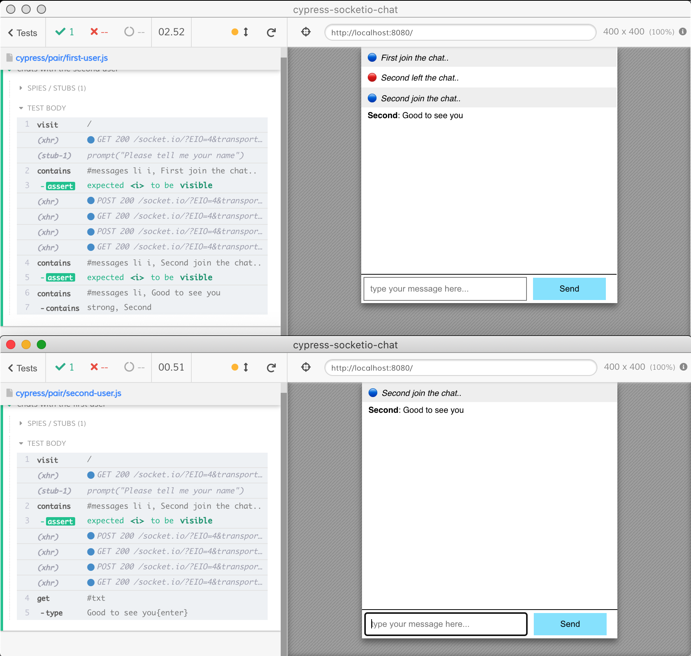
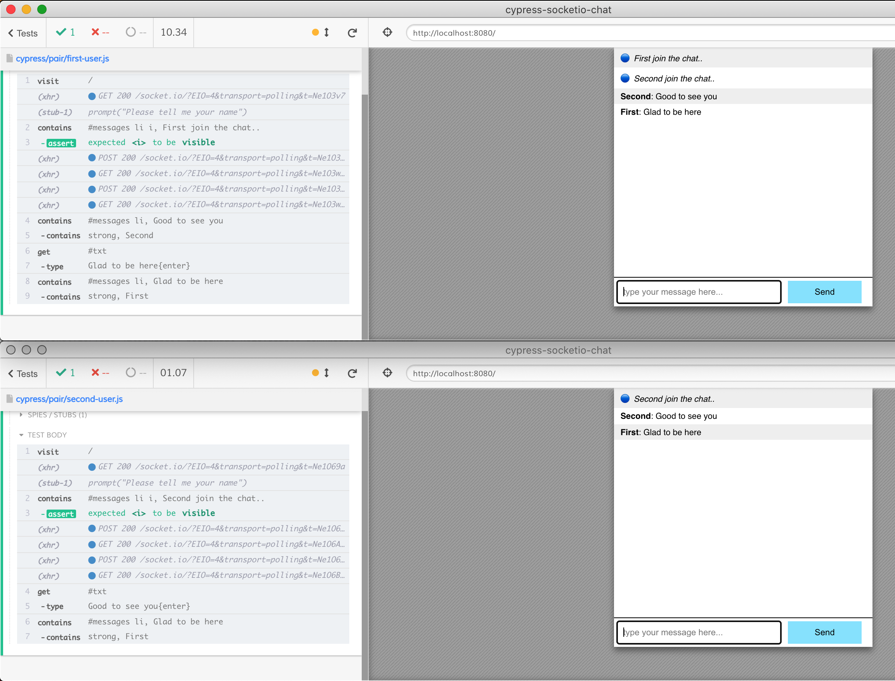

How to test a real-time Socket.io chat app by running two Cypress test runners concurrently.
Please start by reading the blog post Test a Socket.io Chat App using Cypress. In this blog post we will run two Cypress test runners concurrently without any synchronization between them to test a real-time chat application.

Separate specs
First, we want to give each Cypress test runner its own configuration and the spec to run. While the first Cypress test runner executes the spec file cypress/pair/first-user.js, the second Cypress test runner should execute the spec file cypress/pair/second-user.js.
// this test behaves as the second user to join the chat it('chats with the first user', () => { const name = 'Second' // we are chatting with the first user const firstName = 'First' cy.visit('/', { onBeforeLoad(win) { cy.stub(win, 'prompt').returns(name) }, })
// make sure the greeting message is shown cy.contains('#messages li i', `${name} join the chat..`) .should('be.visible')
cy.get('#txt').type('Good to see you{enter}')
// a message from the first user arrives cy.contains('#messages li', 'Glad to be here') .contains('strong', firstName) })
The configuration files
To precisely control the test runners, each instance will have its own configuration file. The first test runner will use cy-first-user.json file.
The property $schema allows the modern code editors to apply custom JSON schema to the configuration file and show intelligent code popups for the fields.
The second configuration file is almost identical.
While running two Cypress instances, we are not using any plugins or custom commands, thus we disable the fixtures, the support files, and the plugins file.
We use a custom integration folder to separate the two concurrent specs from any other any other individual specs. We also set the explicit single test file for each runner.
We increase the default command timeout because it might take a while to start the second test runner.
We use separate folders and videos to avoid each test runner clobbering the common folder on start.
Tip: we could have used cypress-extends plugin to reuse the common configuration data, but I prefer to be explicit in these examples for clarity.
Now we can manually start the application, open the first Cypress instance with npx cypress open --config-file cy-first-user.json, then open the second Cypress instance with npx cypress open --config-file cy-second-user.json command. The tests pass:

Running concurrently
To execute the two test runners together, we can install NPM module concurrently
1 2
$ npm i -D concurrently + concurrently@6.2.0
Let's define common scripts in the package.json file
Whenever we need to run the tests, we start the application and call npm run chat. The concurrently module shows the output from each instance prefixed by the command's name:
We can watch the video saved by each test runner. We can even run the E2E tests on CI. I am using GitHub Actions, first running all E2E tests, then running the two Cypress instances:
# install dependencies, start the app, # and run E2E tests using Cypress GitHub action # https://github.com/cypress-io/github-action -name:Runtests🧪 uses:cypress-io/github-action@v2 with: start:npmstart wait-on:'http://localhost:8080'
# run two Cypress instances at the same time # so they truly chat with each other -name:Run2Cypresses🧪 uses:cypress-io/github-action@v2 with: # we already have installed everything install:false # the application is running already # from the previous "start" command command:npmrunchat
Tip: sometimes starting two Cypress instances creates a race condition while starting the X11 server. A more robust approach would start a separate XServer, then start two Cypress runners.